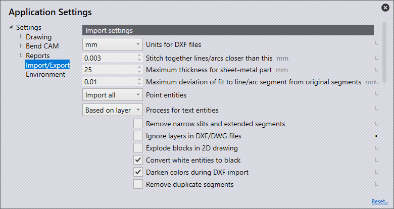

Importation/exportation
Dans cette section, nous aborderons la configuration des Paramètres d’importation.

Cliquez sur l’icône Réglages  sur la page d’accueil.
sur la page d’accueil.

Paramètres d’importation
Dans cette section, nous aborderons la configuration des Paramètres d’importation. Cliquez sur l’icône Réglages. Cliquez sur Importation/Exportation et accédez aux Paramètres d’importation.

Unités pour les fichiers DXF - Réglez ici en millimètres ou en pouces.
Distance maximale entre les éléments de contour non assemblés - Réglez cette valeur (0>1mm). Lors de l’importation d’une pièce comportant des lignes/arcs plus proches que la valeur définie, le logiciel les assemblera automatiquement lors de l’importation.
Epaisseur tôle maximale - Pour reconnaître une grande pièce en tôle, il faudrait augmenter la valeur seuil de reconnaissance de la tôle. (10>40mm) Cette valeur est automatiquement définie par défaut sur 25 mm ou un pouce, selon l’unité utilisée.
Unités de point - L’option sélectionnée déterminera la manière dont les points seront importés.
Importer tous - Tous les points seront importés et affichés.
Ignorer des points sur les polylignes - Cela ignore tous les points détectés sur les polylignes.
Sauter tous - Cela ignore tous les points à l’importation, et aucun n’est affiché.
Ignorer les plans dans les fichiers DXF/DWG - Les dessins DXF et DWG sont généralement créés sur différents calques. Avec ce réglage, le logiciel ignore ces calques et déplace tous les objets sur le calque par défaut.
Décomposer les blocs dans le dessin 2D - Divise les groupes lors de l’importation
Convertir les objets blancs en noirs - Activez ce réglage pour convertir des objets blancs en objets noirs pendant l’importation.
Couleurs plus sombres pendant l’importation DXF- Activez ce réglage pour assombrir les objets colorés pendant l’importation.
Supprimer les segments dupliqués - Activez ce réglage pour supprimer toute géométrie en double trouvée dans la pièce lors de l’importation.
Réglages DXF
Dans cette section, nous aborderons la configuration des Réglages DXF. Cliquez sur l’icône Réglages. Cliquez sur Importation/Exportation et accédez aux Réglages DXF.

Les angles dans le fichier dxf sont des angles d’ouverture. - Activez ce réglage pour que les angles d’un fichier DXF soient usinés comme des angles d’ouverture.
Paramètres d’exportation
Dans cette section, nous aborderons la configuration des Paramètres d’exportation. Cliquez sur l’icône Réglages. Cliquez sur Importation/Exportation et accédez aux Paramètres d’exportation.

Aucun objet POLYLINE dans la sortie DXF - En général, les contours fermés sont exportés sous forme de polylignes lors de l’exportation de fichiers DXF. Certains systèmes CAO ne peuvent pas exécuter cette sortie. Avec ce réglage, le logiciel génère le fichier DXF avec des lignes et des arcs. Ces fichiers sont lisibles partout, mais les fichiers créés sont plus volumineux et les connexions entre les lignes et les arcs sont perdues
Editer les informations de pliage lors de l’exportation des fichiers DXF. - Activez ce réglage pour qu’un fichier DXF exporté soit généré avec des paramètres de pliage.
Informations Bend au format Starmatik - Activez ce commutateur pour afficher les paramètres de pliage au format Starmatik. C’est ici qu’une entité de texte est positionnée exactement au milieu de chaque ligne qui doit être une ligne de pliage.
Transformer le noir en gris lors de l’édition - Lors de l’exportation de données 2D, les objets du fichier DXF sont affichés en noir par défaut. Afin de pouvoir mieux reconnaître les objets dans les programmes de CAO, ceux-ci sont affichés en gris avec ce réglage.
Démarrer MetaCAM avec l’export de fichiers PDG. - Activez ce réglage pour qu’un fichier PDG soit automatiquement configuré pour s’ouvrir dans MetaCAM
Format de sortie du développement - Lors de l’exportation d’un modèle plat, vous pouvez choisir le format de fichier GEO, DXF ou PDG.
Conversion splines
Dans cette section, nous aborderons la configuration des réglages Conversion splines. Cliquez sur l’icône Réglages. Cliquez sur Importation/Exportation et accédez aux réglages Conversion splines.

Convertir les splines pendant l’importation - Définissez ici si la conversion des splines est désactivée ou si les splines doivent être converties en lignes ou en arcs. Dans les deux cas, chaque spline sera convertie en un seul objet polyligne contenant des segments de ligne ou des segments d’arc.
Calcul des points d’appui - Le nombre de lignes ou d’arcs générés est calculé à l’aide de l’un des deux mécanismes suivants : pas ou déviation.
Longueur par segment de ligne et par segment d’arc - Si Pas est sélectionné dans le calcul du nombre de nœuds, définissez ici la longueur de chaque segment de ligne ou d’arc afin de décomposer la spline en utilisant cette longueur de pas.
Divergence maximale pendant l’approximation - Si Déviation est sélectionné dans le calcul du nombre de nœuds, définissez ici la déviation maximale autorisée entre la spline lisse d’origine et l’approximation en ligne ou arc. La polyligne est construite avec le moins de segments possible, tout en maintenant l’erreur maximale dans cette limite.
Décomposer l’assemblage
Dans cette section, nous aborderons la configuration des réglages Décomposer l’assemblage. Cliquez sur l’icône Réglages. Cliquez sur Importation/Exportation et accédez aux réglages Décomposer l’assemblage

Ignorer pièces de coupe - Lors de l’éclatement d’un sous-groupe, l’activation de ce commutateur affiche uniquement les pièces en tôle avec des lignes de pliage. La désactivation affichera toutes les pièces du sous-groupe.
Affichage des composants (écrous à encastrer, boulons, déformations de poinçonnage …) - Utilisez ce réglage pour sélectionner les options à afficher lors de l’éclatement d’un sous-groupe contenant d’autres composants.
Arrêt - Seules les pièces en tôle sont affichées après l’éclatement, les autres écrous/boulons ne le sont pas.
Inconnu - Seuls les composants qui n’ont pas encore été détectés dans le logiciel sont affichés.
All - Tous les composants sont affichés.
Assignation du calque

Dans cette section, nous aborderons la configuration du Assignation du calque. Cliquez sur l’icône Réglages. Cliquez sur Importation/Exportation et accédez aux réglages Assignation du calque.
Dans cette section, les calques utilisés sur les pièces importées dans le logiciel peuvent être automatiquement mappées à leur fonctionnalité (utilisation).
Si une pièce importée comporte un calque MARK, celle-ci peut être configurée pour utiliser automatiquement le calque Mark dans le logiciel.
Nom du calque - Il s’agit du nom du calque qui, si une pièce est importée avec celui-ci, utilisera les fonctionnalités définies dans le panneau « Utilisation ».
utiliser - Il s’agit de la fonctionnalité du calque. Les différentes options disponibles sont :
Standard - Il s’agit du calque standard à utiliser pour la CAM.
Outils dessin - Un calque auxiliaire, à ne pas utiliser pour la CAM.
Marquer - Toutes les entités de ce calque seront marquées, non coupées.
Marqueur d’approche - Entités de point indiquant la position d’approche du laser.
Marqueur de séquence - Indicateurs de texte indiquant l’ordre de séquence des contours.
Centre de déformation - Marquage central pour la déformation (point ou petit L).
Déformer l’empreinte - Contour (empreinte) d’une déformation.
Evaporation - Calque utilisé pour distinguer la combustion du film de protection.
Marquage par point - Calque utilisé pour les codes QR.
Info - Calque d’informations uniquement.